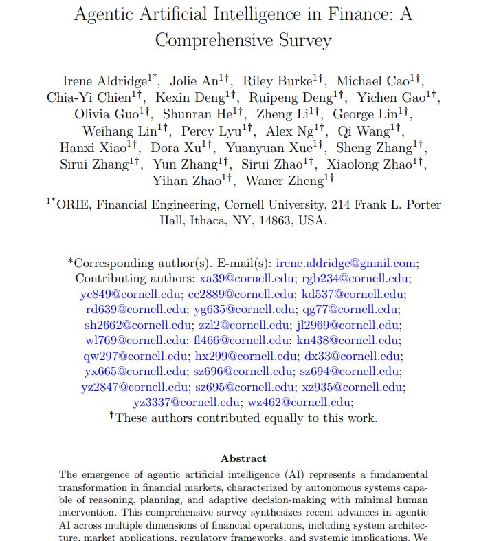

|
Kexin Deng
Hi! I am a graduate of the Master of Engineering in Financial Engineering program at Cornell University. My work focuses on systematic equity research, machine learning for financial prediction, and quantitative portfolio construction.
At Cornell, I conducted research on market microstructure, execution modeling, and regime-aware portfolio strategies, working with Sasha Stoikov. I have also built large-scale machine learning pipelines for cross-sectional equity prediction, including feature engineering, signal evaluation, and portfolio optimization.
My broader interests lie in applying machine learning and data systems to financial markets, including alternative data, large-scale factor modeling, and AI-driven research workflows.
Email /
CV /
SSRN /
Instagram /
Github
|
|
News
- 02/2026 Submitted our paper “Retrieval-Augmented Generation in Finance” to SSRN.
- 12/2025 Graduated from the Master of Engineering in Financial Engineering program at Cornell University.
- 08/2025 Ranked Top-2 in the Trexquant Market Prediction competition using cross-sectional ML models.
- 05/2025 Joined Shepherd Ventures as Senior Quantitative Analyst.
Research
My research interests lie at the intersection of systematic investing, machine learning, and quantitative finance.
I work on building data-driven models for financial markets, including cross-sectional equity prediction,
portfolio construction, and regime-aware risk modeling.
My recent work includes large-scale machine learning pipelines for equity prediction,
retrieval-augmented generation systems for financial knowledge retrieval, and
systematic trading strategies informed by market microstructure signals.
|
|
|
Retrieval-Augmented Generation in Finance: Evaluating Vector, Hierarchical, and Graph-Based RAG Architectures
Kexin Deng,
Yueying Wang,
Yuewei Wang,
Yun Zhang,
Yihan Zhao,
George Lin,
Yu Yu,
Charles Zhou,
Sasha Stoikov,
Laura Appleby,
Cornell Financial Engineering Manhattan, Cornell University
BlackRock
CFEM Capstone Research Project with BlackRock, 2025.8-2026.2
paper /
code /
poster
This project studies retrieval-augmented generation systems for financial knowledge retrieval.
We evaluate multiple RAG architectures including vector search, hierarchical retrieval,
and graph-based retrieval pipelines over enterprise-scale financial document corpora.
|
|
|
Machine Learning and Deep Learning–Enhanced Feature Engineering and Model Zoo Ensembling for the Trexquant Market Prediction
Kexin Deng,
Yichen Gao,
Michael Cao
Cornell Financial Engineering Manhattan, Cornell University
AI/ML Applications to Trading & Execution, 2025.9–2025.12
Mentored by Giuseppe Nuti (head of Machine Learning & AI for UBS’s Global Markets)
paper /
code /
slide deck
Developed a large-scale cross-sectional equity prediction system combining
domain-driven feature engineering with machine learning and deep learning models.
The pipeline expands 400 base alpha signals into 1,947 engineered features,
integrates LightGBM, IC-oriented neural networks, and Ridge regression into a
Model Zoo ensemble optimized using a Correlation-Optimized Ensemble (COE).
The final system achieved a public leaderboard score of 0.07066,
ranking Top 2 publicly and Top 3 privately in the Trexquant competition.
|
|

|
Agentic Artificial Intelligence in Finance: A Comprehensive Survey
Irene Aldridge,
Jolie An,
Riley Burke,
Michael Cao,
Chia-Yi Chien,
Kexin Deng,
Ruipeng Deng,
Yichen Gao,
Olivia Guo,
Shunran He,
Zheng Li,
George Lin,
Weihang Lin,
Fanyi Lyu,
Kwunfung Ng,
Qi Wang,
Hanxi Xiao,
Dora Xu,
Yuanyuan Xue,
Sheng Zhang,
Sirui Zhang,
Yun Zhang,
Sirui Zhao,
Xiaolong Zhao,
Yihan Zhao,
Waner Zheng
Cornell Financial Engineering Manhattan, Cornell University
SSRN Working Paper, 2025
paper
This survey studies the emergence of agentic artificial intelligence in financial
markets. We analyze architectures for autonomous financial agents capable of
reasoning, planning, and adaptive decision-making across trading, portfolio
management, and market infrastructure. The paper reviews system design,
multi-agent coordination, regulatory considerations, and the implications of
agentic AI for market efficiency, liquidity provision, and systemic risk.
|
|
|
Forecasting VIX Spikes with Machine Learning and Market Regime Signals
Sirui Zhao,
Kexin Deng,
Yichen Gao,
Yihan Zhao
Cornell Financial Engineering Manhattan, Cornell University
Systematic Risk Modeling / Volatility Forecasting, 2025
Mentored by Edward Tom (Senior Director at the Chicago Board of Options Exchange)
paper
Developed a machine learning framework to forecast extreme spikes in the
CBOE Volatility Index (VIX) using cross-asset market signals and macroeconomic
indicators. The system integrates equity market features, options-implied
volatility metrics, macro factors, and market microstructure signals to
detect early-warning patterns preceding volatility explosions.
The feature pipeline incorporates realized volatility, term structure
dynamics of VIX futures, equity index momentum, credit spreads,
liquidity indicators, and macroeconomic variables from the FRED database.
Multiple classification and regression models including Gradient Boosting,
Random Forest, and neural networks are trained to predict the probability
of large VIX spikes and regime transitions.
The model is evaluated on historical market stress events such as the
COVID crash, inflation shocks, and volatility regime shifts, demonstrating
improved early detection of volatility surges and enabling systematic
portfolio protection strategies for risk-managed equity portfolios.
|
|
|
News Sentiment Analysis and Summarization for Financial Markets
Sirui Zhao ,
Kexin Deng,
Weihang Lin
Cornell Financial Engineering Manhattan, Cornell University
ORIE 5253 Asset Management Seminar, 2025
Mentored by Andrew Chin (Chief Artificial Intelligence Officer at AllianceBernstein)
paper /
code /
demo
Built an end-to-end platform for extracting structured investment signals
from financial news. The system ingests company-specific news articles,
applies FinBERT to generate article-level sentiment scores, and aggregates
them into daily stock-level sentiment time series for S&P 500 constituents.
The pipeline combines sentiment signals with price dynamics to visualize
sentiment–return co-movements and generates simple Buy/Hold/Sell regimes
based on smoothed sentiment indicators. An LLM-based agent summarizes
daily news flows into concise investor-friendly insights, enabling faster
interpretation of market-moving events.
The platform integrates data ingestion, NLP-based sentiment modeling,
signal aggregation, and interactive dashboards, demonstrating how
large-scale financial text data can be transformed into actionable
signals for quantitative asset management workflows.
|
|
|
Clustering and Network-Based Portfolio Optimization with Shrinkage and CVaR
Kexin Deng, Olivia Guo, Weihang Lin
Cornell University — Operations Research and Information Engineering
ORIE Asset Management Project, 2025
Mentored by James Renegar (Class of 1912 Professor of Engineering Emeritus)
paper /
code /
Developed a machine-learning–driven portfolio construction framework combining
clustering-based stock selection with shrinkage covariance estimation and CVaR
optimization. Backtests on S&P 500 equities (2020–2023) show improved stability
and downside risk control, achieving Sharpe ratios above 1.6 and significantly
outperforming the S&P 500 benchmark.
|
|
|
High-Frequency Execution Strategy with Microstructure Signals
Kexin Deng,
Yichen Gao,
Michael Cao,
Dora Xu
Cornell Financial Engineering — ORIE 5259 Market Microstructure & Algorithmic Trading
slides /
code
Score-based high-frequency execution model using L2 limit order book signals
including momentum, order flow imbalance, volatility-to-spread ratio, bid–ask
spread, and time pressure. Rolling optimization and queue-aware execution
improve trade timing and reduce buy–sell spread by 40–125% relative to a TWAP
benchmark.
|
|
|
Automotive Industry Portfolio Optimization and Risk Analysis
Kexin Deng,
Michael Wachsman,
Klaus Stier,
Olivia Guo,
Cornell ORIE 5630 — Financial Data Science
paper
Quantitative sector analysis of U.S. auto manufacturers (Tesla, GM, Ford)
implemented in R (quantmod). Constructed a tangency portfolio
using Mean–Variance Optimization with Treasury-bill risk-free rates and
benchmarked against the industry index. Extended analysis using CAPM
regressions and tail-risk metrics (VaR, Expected Shortfall) to evaluate
systematic exposure and downside risk.
|
|
|
Siamese ResNet50 for Paired Image Classification
Kexin Deng,
Rui Li
Cornell CS ML
code
Built a Siamese ResNet50 model in PyTorch to classify paired grayscale images in a rock–paper–scissors task, using a shared encoder to learn comparable representations and a fully connected layer on concatenated features to capture pairwise interactions. Performance improvements were driven primarily by training strategy rather than architecture, including mixed precision training for stability, a cosine warm restarts scheduler for optimization, balanced BCE loss to address class imbalance, and F1-based threshold tuning aligned with the evaluation metric. The final model achieved 0.9048 private leaderboard accuracy (Top 4/91), outperforming CNN and ResNet18 baselines.
|
|
Micropapers
|
Squareplus: A Softplus-Like Algebraic Rectifier
A Convenient Generalization of Schlick's Bias and Gain Functions
Continuously Differentiable Exponential Linear Units
Scholars & Big Models: How Can Academics Adapt?
|
|
Recorded Talks
|
Radiance Fields and the Future of Generative Media, 2025
View Dependent Podcast, 2024
Bay Area Robotics Symposium, 2023
EGSR Keynote, 2021
TUM AI Lecture Series, 2020
Vision & Graphics Seminar at MIT, 2020
|
|
Academic Service
|
Lead Area Chair, ICCV 2025
Lead Area Chair, CVPR 2025
Area Chair, CVPR 2024
Demo Chair, CVPR 2023
Area Chair, CVPR 2022
Area Chair & Award Committee Member, CVPR 2021
Area Chair, CVPR 2019
Area Chair, CVPR 2018
|
|
Teaching
|
Teaching Assistant
Cornell Johnson Graduate School of Management
May 2025 – Dec 2025
Courses
Cornell Johnson MS in Business Analytics
• BANA 5160 Capstone Project
• BANA 5040 Teamwork and Collaboration
Cornell Johnson MBA
• NCC 5040 Leading Teams
Cornell Nolan School of Hotel Administration (EMMH)
• HADM 6911 Hospitality Immersion II
Cornell School of Engineering — Financial Engineering
• ORIE 5257 Special Topics in Financial Engineering VI
(AI/ML Applications to Trading & Execution)
|
Feel free to steal this website's source code. Do not scrape the HTML from this page itself, as it includes analytics tags that you do not want on your own website — use the github code instead. Also, consider using Leonid Keselman's Jekyll fork of this page.
|
|
{kind=link}
{kind=link}